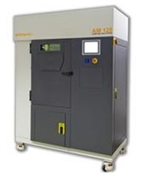

产品
AM125金属快速制造机（金属三维成型机，三维打印机）

最大成型尺寸 125 x 125 x 125 mm (X, Y, Z)
成型效率* 每小时5 cm³ - 20 cm³
扫描速度 最高达2000 mm/s
定位速度（最高） 7000 mm/s
层厚 20 - 100 µm
激光光束直径 在粉末表面直径为35 µm
激光选项 100或200 W
外形尺寸* 1350 x 800 x 1900 mm (L x W x H)
重量 毛重1125 kg，净重900 kg
电源 230 V 1 PH，16 A
可用材料 不锈钢316L和17-4PH、H13模具钢、铝Al-Si-12、钛CP、Ti-6Al-4V和Ti-6Al-7Nb、钴铭合金 (ASTM75)、铬镍铁合金718和625
开发中的材料 我们还有一系列材料正在开发中，请联系雷尼绍获取最新清单。
* 成型效率取决于材料、密度和几何形状。不是对所有材料都以最高成型效率进行处理。
** 尺寸不包含附件。
成型效率* 每小时5 cm³ - 20 cm³
扫描速度 最高达2000 mm/s
定位速度（最高） 7000 mm/s
层厚 20 - 100 µm
激光光束直径 在粉末表面直径为35 µm
激光选项 100或200 W
外形尺寸* 1350 x 800 x 1900 mm (L x W x H)
重量 毛重1125 kg，净重900 kg
电源 230 V 1 PH，16 A
可用材料 不锈钢316L和17-4PH、H13模具钢、铝Al-Si-12、钛CP、Ti-6Al-4V和Ti-6Al-7Nb、钴铭合金 (ASTM75)、铬镍铁合金718和625
开发中的材料 我们还有一系列材料正在开发中，请联系雷尼绍获取最新清单。
* 成型效率取决于材料、密度和几何形状。不是对所有材料都以最高成型效率进行处理。
** 尺寸不包含附件。
由Renishaw设计生产的AM125金属快速制造机具有真空室抽空系统，内部充有高纯度氩气，用于产生高质量空气环境。特别是在用钛等活性材料制造时，氧气含量必须尽可能低。使用全密闭焊接真空室可以最大程度降低气体消耗量，而且坚固耐用。该系统也可以在氮气环境中制造非活性材料。
AM125内部具有可拆卸式粉盒，非常适合材料的更换与输送。通过手套式操作箱进行安全更换过滤和系统粉末处理，最大程度避免用户与材料或辐射物接触。 AM125在设计时以制造业为本， 带有方便的触摸屏用户界面，结构坚固耐用。它是生产复杂晶格结构或各种精细的空腔结构零件的理想工具。
所有文件和数据的准备工作都是在办公室通过离线方式完成的，而系统就是一个严格控制的加工单元，文件准备软件为高端用户提供了实用的过程开发工具。
AM125内部具有可拆卸式粉盒，非常适合材料的更换与输送。通过手套式操作箱进行安全更换过滤和系统粉末处理，最大程度避免用户与材料或辐射物接触。 AM125在设计时以制造业为本， 带有方便的触摸屏用户界面，结构坚固耐用。它是生产复杂晶格结构或各种精细的空腔结构零件的理想工具。
所有文件和数据的准备工作都是在办公室通过离线方式完成的，而系统就是一个严格控制的加工单元，文件准备软件为高端用户提供了实用的过程开发工具。